Moriya, Ibaraki: things to do, food and stays
Moriya · Ibaraki
Moriya
Highlighted on the Ibaraki map.
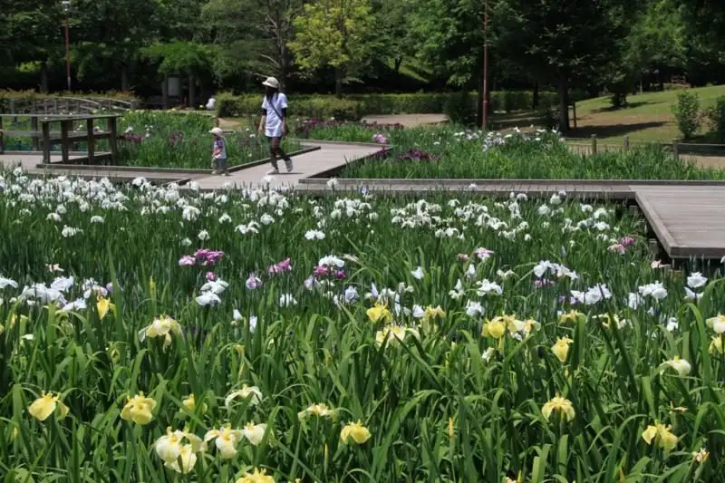
Stay
ホテルルートインGrand守谷駅前
Hotel Route Inn Grand Moriya Ekimae
Hotel in Chuoni, Moriya with a large communal bath; 3-minute walk from Moriya Station.
ホテルルートインＧｒａｎｄ守谷駅前
Hotel Route Inn Grand Moriya Ekimae
東横ＩＮＮ守谷駅前
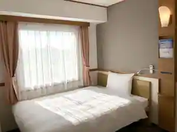
Toyoko INN Moriya Ekimae
Inn in Chuo, Moriya with breakfast available.
常総広域地域交流センター いこいの郷 常総
Joso Koiki Chiki Koryu Center Ikoino Sato Joso
Dining
鬼怒川 竹やぶ
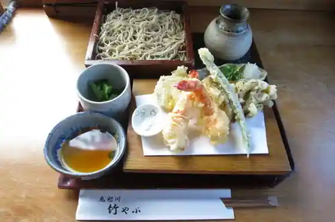
Kinugawa Take Yabu
兎に角 南守谷店
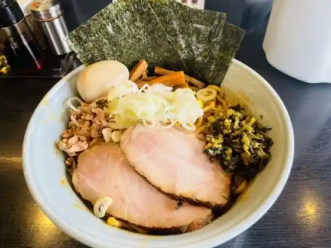
Tonikaku Minami Moriya
かつ吉 野庵
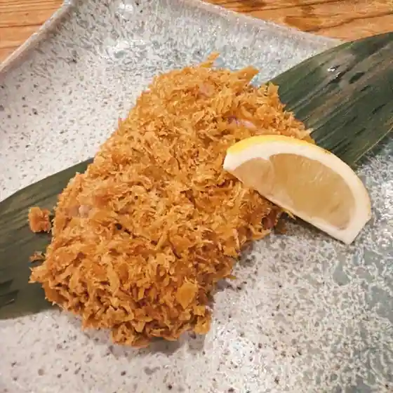
Katsu Kichi No Iori
手打ちそば 蕎山
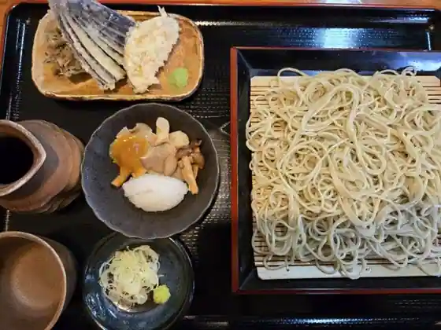
Teuchi Chisoba Kyo Yama
美里
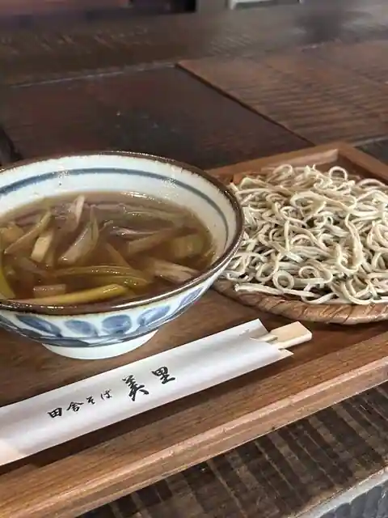
Misato
かげろう
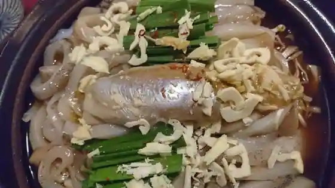
Kagero
はげたこ
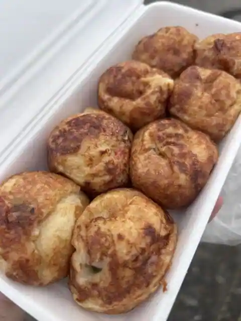
Hagetako
端山
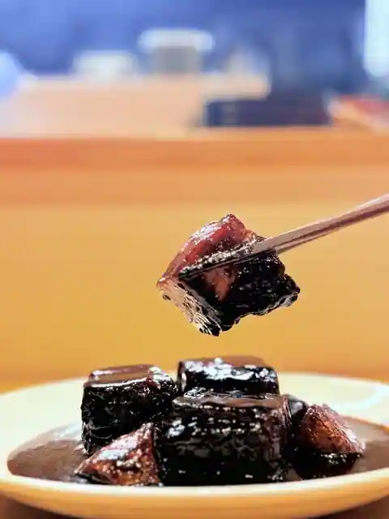
Hayama
イル ネッソピッツァナポレターナ
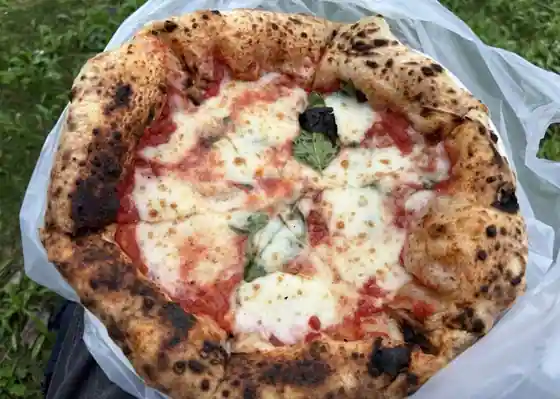
Iru Nessopittsuanaporetana
鮨わたなべ
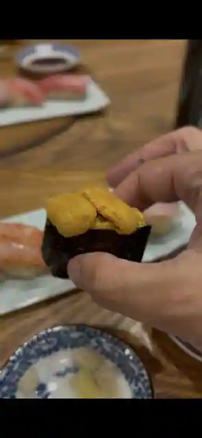
Sushi Watanabe
手打ちラーメン いまの家
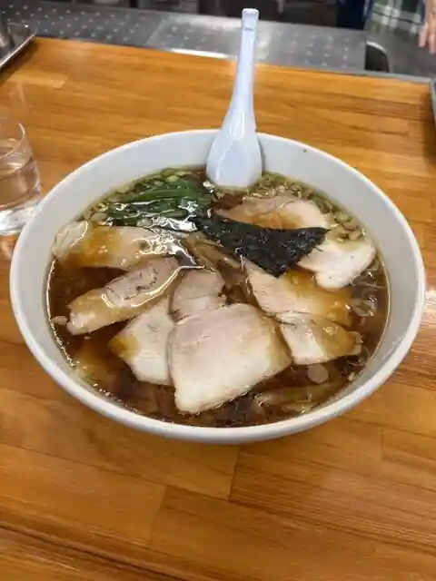
Teuchi Chi Ramen Imano Ie
サンタムール
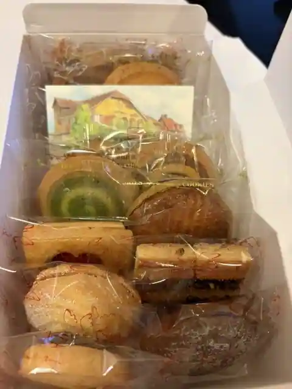
Santamuru
中華蕎麦 一無庵
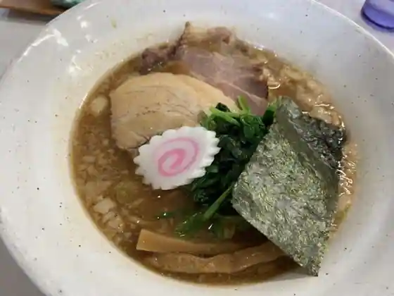
Chuka Soba Ichi Mu Iori
ラーメンショップ 新守谷店
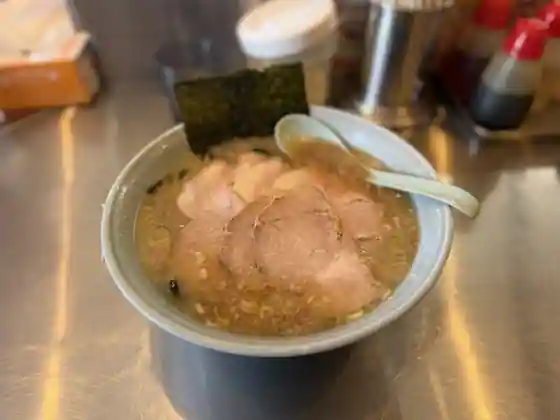
Ramen Shoppu Shin Moriya
手打ちそばと鴨料理 一穂
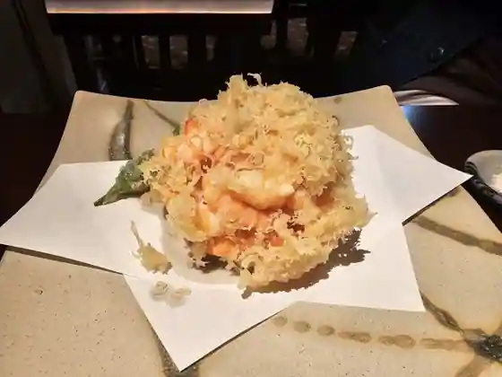
Teuchi Chisobato Kamo Ryori Kazuo
カフェ・ド・ラパン
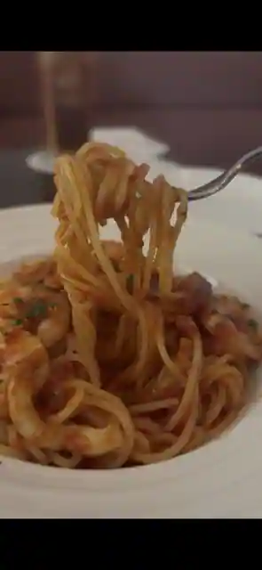
Cafe Do Ra Bakery
薫風飯店
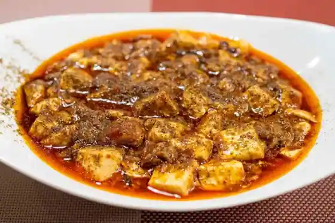
Kunpu Meshi
守谷ベーカリー
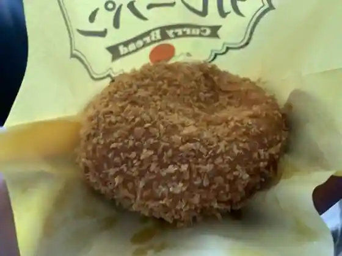
Moriya Bakery
自由軒
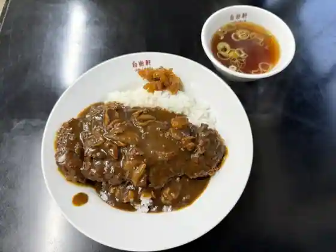
Jiyu Ken
足柄うどん
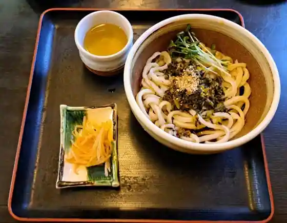
Ashigara Udon
パン オ トラディショネル Pasar守谷店
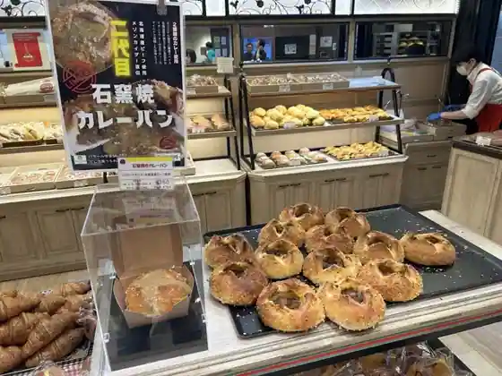
Bakery O Toradishoneru Pasar Moriya
パンヲゴラン
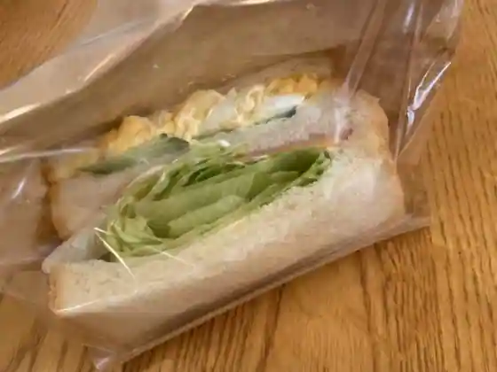
Bakery Wogoran
麺処 春の風
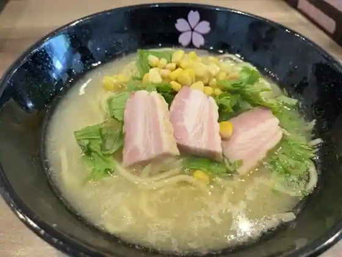
Men Tokoro Haru No Kaze
鼓
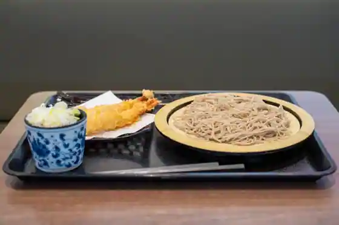
Tsuzumi
Sights
Pasar Moriya (Nobori Sen)
Pasar Moriya (Kudari Sen)
Shiki no Sato Park
Ikoi no Sato Joso
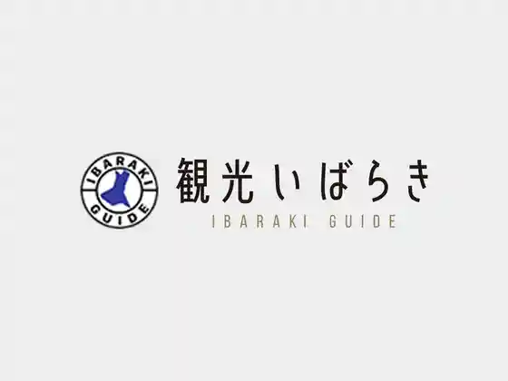
Supadorai Museum
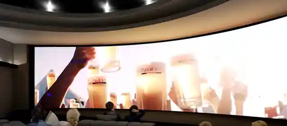
Meiji Naruhodo Fakutorii Moriya
Umi Zendera
Cho Ryu Tera
Moriya Manabi Village
LANTERN CAMPING FIELD MORIYA
Miruku Kobo Moriya
Toyoko In Tsukuba Ekusupuresu Moriya Ekimae
Sanmoriya